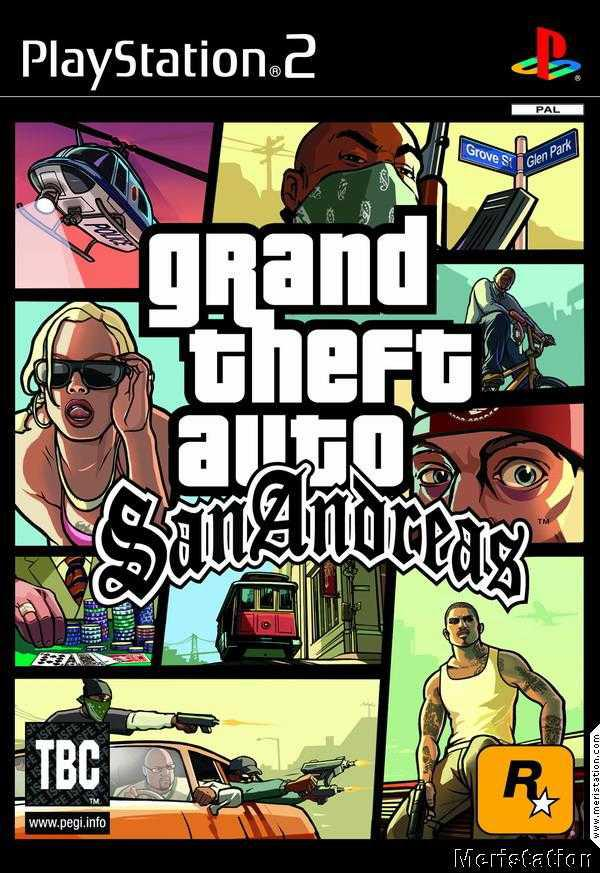

Muchos tuvimos o conocimos a alguien que tenia esta legendaria consola que tantas horas de entretenimiento nos ha regalado. Sus innumerables titulos de buena calidad y buen titulo hace que la consola haya llegado a nuestros dias con un prestigio del cual pocas consolas pueden hablar.
Por eso hoy presentamos un TOP 10 juegos legendarios de esta consola
Grand theft Auto San Andreas
Pocos lo saben pero el GTA SA salio como exlusivo de la PS2. El juego mas ambicioso de Rockstar para esa fecha dejo a todos con la quijada caida con caracteristicas como el amplio mundo, la exorbitante cantidad de misiones y todo lo que su mundo tenia para ofrecer.
Hoy en dia el juego sigue vivo por la buena comunidad que sigue juntando a mas gente por lo que es un juego que no puede faltar en tu biblioteca. Dejamos un pequeño gameplay para que puedan observar como se veia el juego.
Mas sobre GTA Los mejores trucos de GTA SA Ps2
GOD OF WAR

De la mano de santa monica studio recordamos a God Of War la primera de toda la saga. Videojuego Hack and Slash frenetico y divertido con una historia que transcurre en la antigua Grecia. Otro juego que vino para quedarse. Definitivamente un juego con el que se debe contar.